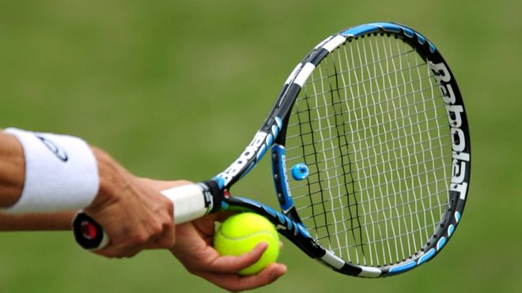

Basic Rules of Tennis
- The game starts with a coin toss to determine which player must serve first and which side they want to serve from
- The server must then serve each point from alternative sides on the base line
- If the server fails to get their first serve in they may take advantage of a second serve. If they again fail to get their second serve in then a double fault will be called and the point lost
- The ball can hit any part of the line for the point to be called in, outside the line and the ball is out.
- he balls in a tennis match are changed for new balls every 6 games